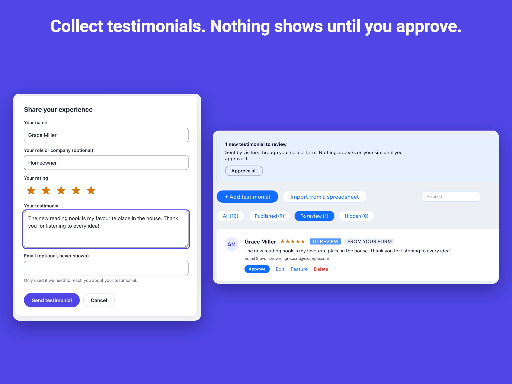

How to collect customer testimonials on your Wix site
The easiest testimonial to get is the one a happy customer can leave right where they read the others. Testimonials Wall adds a moderated form under the wall.
1. Turn on the collect form
Open a wall in the dashboard, go to “Collect form” and switch it on. Choose whether to ask for a star rating, a role or company and an email address (the email is never shown on the site).

2. Review and approve
New testimonials wait under “To review”. Nothing appears on your site until you approve it. Edit typos, add a photo with permission, or hide anything you do not want to publish.
3. Ask at the right moment
Link to the page with the form from your thank-you emails, invoices or follow-up messages, a few days after the job is done.
Keep it honest
Publish real testimonials in the customer’s own words. Invented or paid-for reviews are unlawful in many countries and damage trust.
Questions
How is spam handled?
The form has hidden bot traps, allows a few submissions per network per day, and caps how many unreviewed submissions can wait.
Does the form collect personal data?
Only what the visitor types: a name, the testimonial and, if you ask for them, a rating, a role and an email address that only you can see.
See it in the Wix App Market